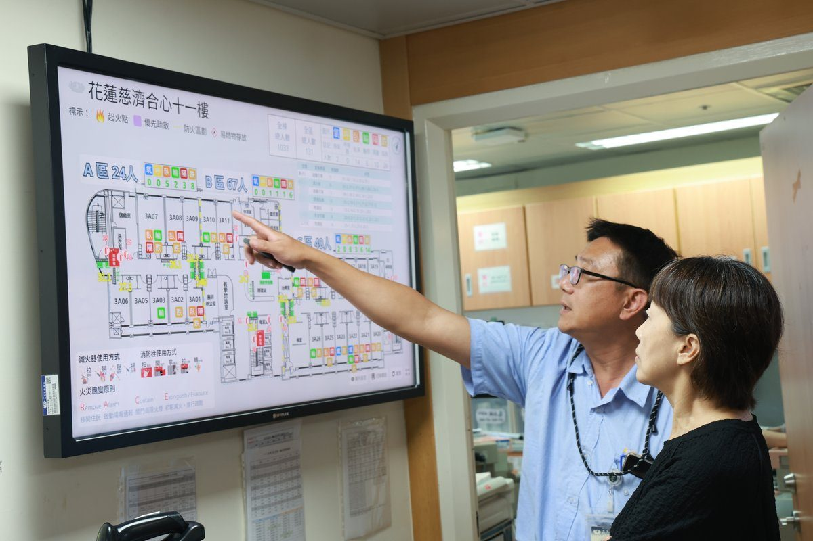

AI與MR雙軸防減災 花蓮慈院守護病人安全

可樂電子報小編/編輯
醫院病房裡環境管線複雜，聚集大量臥床、行動不便以及依賴呼吸器、氧氣設備的病患，一旦發生火警，疏散難度遠高於一般建築。花蓮慈濟醫院針對醫療機構防災常見的「看不早、判不快、練不真」三大痛點，自行研發結合AI人工智慧與MR混合實境的「消防智慧防減災系統」，把防線提前部署，守住病人安全與醫療韌性。

花蓮慈濟醫院工務室主任曾繁介指出，病房加上夜間輪班人力有限，一旦發生火災，傳統的「事後警報」與固定式逃生指標已難以滿足高風險、低容錯的應變需求。護理人員同時要肩負火點確認、初期滅火、病患狀態判斷、房內與廁所清查、水平疏散，以及病患與清查交接，若未能在第一時間減災或滅火，火勢蔓延後果難以收拾。
為此，花蓮慈院自2022年起率先在合心八樓建置智慧防災系統，以「不取代、不干涉、可降級、可接手」四大設計原則，架設在原有消防系統之上，再一路擴展到各樓層病房，從固定式逃生系統走向會依現場狀況調整的智慧防災。
系統首先結合環境異常升溫分析與既有偵煙訊號，提前掌握火點與熱區，並依防火區劃及現場狀況讓「動態逃生指示燈」即時改變方向，引導人員往安全區域水平疏散；同時透過邊緣運算統計各區人數、串接護理白板資料，標示出用氧、使用呼吸器、臥床、輪椅、隔離及高跌倒風險病患的位置與數量，也標出酒精等易燃物存放點。
資訊同步是另一大亮點。起火區域及上下樓層的電子白板、值班護理長、指揮中心的手機與平板，都能同步顯示火點位置、火勢是否擴大及疏散進度，讓指揮中心與不同救災人員協調病患接收與人力支援；消防隊抵達現場時，只要掃描QR Code，就能即時掌握起火樓層的平面隔間圖、火點與待援人數。院內滅火器也加裝無線探測器進行數位化自動巡檢，每分鐘回傳壓力狀態與定位資訊，一旦出現低壓異常或被打掃等因素移離定位，護理站與工務系統便立即發出警示，確保設備隨時處於「在位且可用」的最佳狀態。

除了硬體與平臺，第一線人員的訓練同樣關鍵。工務組導入MR混合實境沉浸式訓練，護理人員戴上頭盔後，依模擬實景在第一時間辨識火點、清查廁所有無人員、確認病患床數與氧氣設備，並依火勢大小決策應變措施，系統針對視角與操作進行AI量化評分與計時，補足傳統演練臨場感不足的問題。

曾繁介表示，AI智慧防災平臺與MR消防教育訓練雙軸推動後，不僅減輕第一線人員的巡檢與應變負擔，各項關鍵應變指標也明顯改善：火災風險偵測提前3.5分鐘、決策反應時間縮短51.4%、情境反應時間由52秒縮短至33秒（改善36.5%）、整體疏散完成時間改善18.1%。目前已有許多醫療院所前來觀摩取經，他強調，這套系統不是為了競賽而設計，也不只是消防的一環，而是希望真正從第一線醫護的使用需求出發，減輕人力負擔，把「事後被動警報」轉化為「事前預警與支援即時決策」。

他也將於12月5日在南港展覽館舉行的臺灣醫療科技展，以「當逃生方向不再固定，AI能改變什麼？從一層病房到多樓層的智慧防災實踐」為題，分享花蓮慈院率先全臺導入科技智慧防減災的經驗；當天下午4時，他也在4樓花蓮慈院M820展位，談這套系統的設計理念與落地實踐。
📸 更多現場紀實影像


🌟 掌握花蓮在地第一手資訊・歡迎訂閱追蹤
深度紀實報導、在地精采影音專題，第一時間接收最新消息！